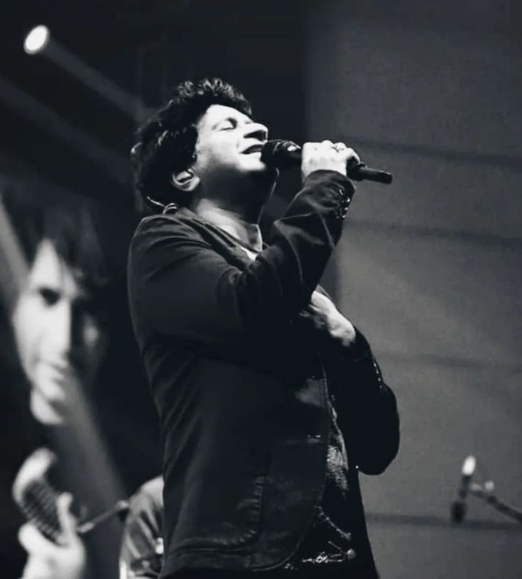

Born in New Delhi
Krishnakumar Kunnath was born on 23 August to a Malayali family. He grew up immersed in a diverse musical landscape that would shape his eclectic style.

A Tribute to the Legend
Singer · Songwriter · The Voice of a Generation
1968 – 2022Krishnakumar Kunnath, beloved worldwide as KK, was born on 23 August 1968 in Delhi to a Malayali family with roots in Kerala. Growing up in the cultural melting pot of New Delhi, he absorbed sounds from every direction — Hindustani classical melodies drifting from a neighbour's radio, Western rock and pop from cassette tapes shared among friends, and the devotional songs his mother hummed at home. Remarkably, KK never received formal training in music; his voice was entirely self-taught, shaped by an innate sense of melody and an insatiable curiosity for every genre he encountered.
After graduating from the University of Delhi, KK spent several years singing jingles for advertisements — over 3,500 of them — honing a voice that could shift from raw power to heartbreaking tenderness in a single phrase. His break came in 1999 with the indie pop album Pal, whose title track became an overnight anthem for an entire generation. The song captured the bittersweet ache of farewells and new beginnings with such sincerity that it remains the unofficial soundtrack of countless school and college goodbyes across India.
Bollywood soon took notice. KK went on to lend his voice to some of Hindi cinema's most iconic romantic ballads — "Tadap Tadap" from Hum Dil De Chuke Sanam, "Aankhon Mein Teri" from Om Shanti Om, "Khuda Jaane" from Bachna Ae Haseeno, and "Tune Maari Entriyaan" from Gunday. Yet he was never bound by language; he recorded songs in Hindi, Bengali, Tamil, Telugu, Kannada, Malayalam, Marathi, Odia, Assamese, and Gujarati, connecting hearts across every linguistic border India has.
What set KK apart was not just vocal range — it was emotional truth. He sang as though every lyric was a confession, every note a secret shared only with the listener. Composers from A. R. Rahman to Pritam, Vishal–Shekhar to Shankar–Ehsaan–Loy called him their first choice because he didn't merely sing a melody — he lived it. On 31 May 2022, KK performed his final concert at Nazrul Mancha in Kolkata, singing with the same passion that had defined his three-decade career. He passed away later that evening, leaving behind a body of work that will echo through generations.
I never learned music formally. Whatever I sing comes from what I feel inside. Music chose me — all I did was listen to it.
— KK (Krishnakumar Kunnath)
Krishnakumar Kunnath was born on 23 August to a Malayali family. He grew up immersed in a diverse musical landscape that would shape his eclectic style.
After completing his education at Delhi University, KK began recording jingles for advertising agencies, eventually completing over 3,500 ad jingles that sharpened his vocal versatility.
KK released his debut album Pal, featuring the unforgettable title track that became an anthem of nostalgia for millions across India. The album also included "Yaaron", another timeless classic.
His rendition of "Tadap Tadap" for Hum Dil De Chuke Sanam showcased his extraordinary ability to convey raw emotion, catapulting him to playback stardom.
KK won the Filmfare Award for Best Male Playback Singer for the chart-topping romantic track "Khuda Jaane" from Bachna Ae Haseeno, composed by Vishal–Shekhar.
KK recorded chart-toppers across Hindi, Bengali, Tamil, Telugu, Kannada, Malayalam, and more — becoming one of India's most versatile playback singers with hits in 11 languages.
This high-energy Bollywood track from Gunday proved KK could command up-tempo, celebratory numbers just as powerfully as his signature ballads.
KK performed his last live concert at Nazrul Mancha, Kolkata, singing with all the passion his fans had come to love. He passed away later that evening at the age of 53, leaving an irreplaceable void in Indian music.
1999 · Indie Pop Album
1999 · Friendship Anthem
1999 · Hum Dil De Chuke Sanam
2007 · Om Shanti Om
2008 · Bachna Ae Haseeno
2014 · Gunday
KK's music transcended film and language. His voice carried the weight of unspoken emotions, turning every song into a personal conversation with the listener. From college farewells to late-night drives, his songs became the soundtrack to an entire generation's most intimate moments.
Though he is no longer with us, every note he ever sang continues to live — in headphones on crowded trains, in concert halls that still play his recordings, and in the hearts of millions who found solace, joy, and love in his voice.
Read More on Wikipedia →